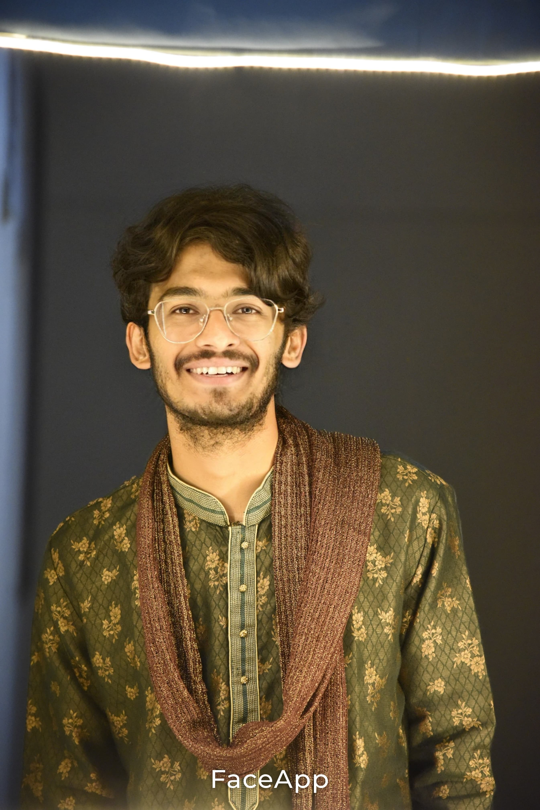

CHEY

SUMMARY
A motivated Computer Science graduate with strong technical skills and a passion for problem-solving and innovation. Proficient
in programming, web development, and database management, with hands-on experience in completing academic projects and
personal initiatives..
EDUCATION
- NEW VISION THE CONCEPT SCHOOL,KHAMMAM(2008-2020)
- NARAYANA JUNIOR COLLEGE,KONDAPUR(2020-2022)
- NARAYANA JUNIOR COLLEGE,MADHAPUR(2023)
- Bachelor of Technology, Computer Science & Engineering
- Indian Institute of Information Technology Pune(2023-2027)
WORK EXPERIENCE
Personal Project - Portfolio Website
2024-present
- Designed and built a responsive personal portfolio website using HTML.
- Deployed the project on GitHub Pages for live access.
SKILLS
- Programming Languages:Python ⭐️⭐️⭐️⭐️⭐️,c ⭐️⭐️⭐️⭐️⭐️,c++ ⭐️⭐️⭐️⭐️⭐️
- Web Development: HTML ⭐️⭐️⭐️⭐️
- database management:Mysql ⭐️⭐️⭐️⭐️
EXTRA CURRICULAR ACTIVITIES
- Organized and participated in university coding competitions and hackathons.
- Actively contributed to the Computer Science Club by mentoring junior students in programming.
HOBBIES
- Competitive Coding
- Playing chess
- Playing Cricket
- Reading Books
CONTACT ME